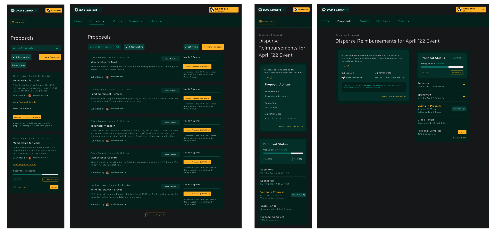

Mar 2025 – Current
Playmetrics
Senior UX & UI designer
Working on a large-scale youth sports management platform supporting governing bodies, clubs, coaches, players, and parents across multiple levels of competition.

UX, product design & illustration
My passion is in the understanding and design of complex systems, deep architecture, and visual representations of these topics. I enjoy taking complex ideas and data and distilling it down to its most understandable form.
Mar 2025 – Current
Senior UX & UI designer
Working on a large-scale youth sports management platform supporting governing bodies, clubs, coaches, players, and parents across multiple levels of competition.
Sep 2022 – Mar 2025
Senior Product Designer
Clinical Study Insight and Participant Management Startup (SaaS)
Solo designer working with two engineering teams to take business requirements and execute them into wireframes, final mockups, and maintain a pattern library. Interfacing with health professionals to create interfaces for clinical study insights including chart creation and participant management.
 Healthcare Case StudyRead the case study
Healthcare Case StudyRead the case study
Apr 2021 – Sep 2022
Senior UX Design & Visual designer
Worked as a senior user experience and product designer. Providing design guidance and expertise to build out consistent and intuitive interfaces for new and innovated web3 technology in the DAO space.
Jun 2022: a work in progress with two other designers. A reworking of the current DAO platform to incorporate technology updates as well as a number of usability improvements that have been needed.

A small fundraising platform created as an add on for onboarding into a DAO on the DAOhaus platform. The platform was built to support a community funding round for DAOhaus and has collected around 871 ETH in the first 6 months it was made available to the public.
 Yeeter Fundraising platform ('22)Read the case study
Yeeter Fundraising platform ('22)Read the case study
Apr 2012 – June 2021
Initially hired as a web developer then quickly moved into UX design and project management. Worked to push the importance of UX design and Agile software development methodologies across the company led to gaining more responsibility and the promotion to manager of the UX Team.
Projects over the course of my time there:
 Event Management UIRead the case study
Event Management UIRead the case study
March – November 2017
I worked on a few small projects for a data visualization firm, this included working on initial design and strategy of working with the data through to final production and QA of projects.
Projects:

February 2016 – October 2017
Hack Oregon is a volunteer-based non-profit that utilizes publicly available data to create data visualizations to help bring light to civic issues. I started as a volunteer for visual, interaction, and information design for projects. I moved into a role helping lead the creation and implementation of new branding and style guidelines for their platform CIVIC.
I’ve also taught courses and workshops in design thinking, information design, and software design foundations through their Hack University educational branch.
 CIVIC Product DesignRead the case study
CIVIC Product DesignRead the case study
2007 – 2010
Bachelor of Arts (B.A.), Photography — Conceptual art focused, explored a variety of mediums with a core in photography.